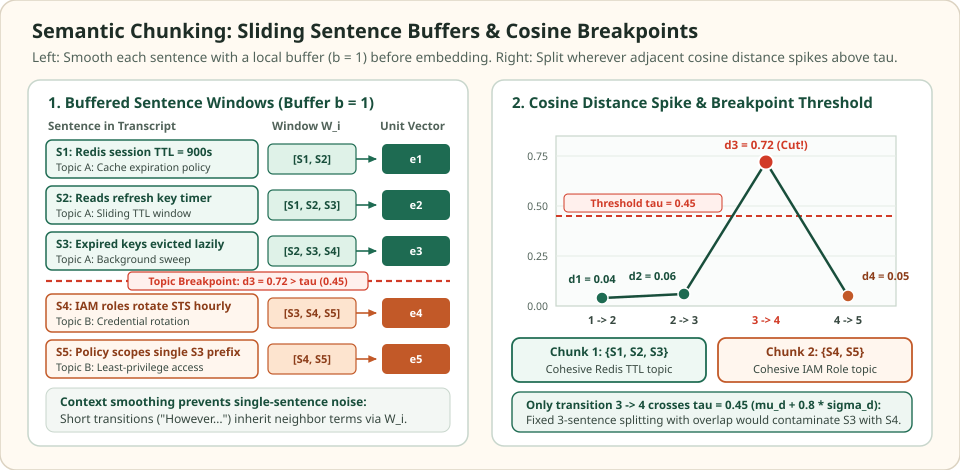

Semantic chunking: detect topic shifts with sliding sentence embeddings
Fixed-token and recursive character splitters rely on punctuation and whitespace hints: paragraph breaks, headings, and periods. When a document lacks clean structural delimiters—such as a continuous meeting transcript, an OCR-extracted PDF, or a long multi-topic narrative paragraph—syntactic boundaries no longer align with where the subject actually changes.
Semantic chunking replaces fixed token counts with embedding-driven boundary detection. By smoothing each sentence with a local context window, embedding the buffered windows, and measuring the cosine distance between consecutive positions, the splitter places chunk boundaries selectively at spikes in semantic divergence.
Where a continuous transcript pivots from Redis TTLs to IAM roles
Five consecutive sentences · buffer $b = 1$ · one cosine distance spike
An unformatted architecture review transcript runs five sentences together without paragraph breaks. Sentences $S_1, S_2, S_3$ specify Redis session cache expiration, while $S_4, S_5$ abruptly pivot to AWS IAM credential rotation. A 3-sentence sliding window with 1-sentence overlap produces a second chunk $\{S_3, S_4, S_5\}$ that mixes cache eviction with IAM policy rules; semantic chunking measures a cosine distance spike $d_3 = 0.72 > \tau = 0.45$ and cuts cleanly between $S_3$ and $S_4$.


To trace the exact calculation, each sentence $S_i$ is first expanded into its local context window $W_i = [S_{\max(1,i-1)}, \dots, S_{\min(5,i+1)}]$ and mapped to a 2D unit embedding $e_i \in \mathbb{R}^2$. For unit vectors, the adjacent cosine distance is $d_i = 1 - e_i^\top e_{i+1}$:
Five transcript sentences smoothed with buffer b = 1, their 2D unit embeddings e_i, and adjacent cosine distances d_i = 1 - e_i^T e_{i+1} against threshold tau = 0.45.
| Sentence ID & transcript text | Buffered window ($b=1$) | Unit embedding $e_i$ | Transition $i \to i+1$ | Cosine distance $d_i$ | Split at $\tau = 0.45$? |
|---|---|---|---|---|---|
| S1: "Redis caches store session keys with a 900s TTL." | $[S_1, S_2]$ | $(0.9979, 0.0643)$ | $1 \to 2$ | $0.04$ | No (Chunk 1) |
| S2: "Active reads refresh the key expiration timer." | $[S_1, S_2, S_3]$ | $(0.9400, 0.3412)$ | $2 \to 3$ | $0.06$ | No (Chunk 1) |
| S3: "However, expired keys are evicted lazily." | $[S_2, S_3, S_4]$ | $(1.0000, 0.0000)$ | $3 \to 4$ | $0.72$ | Yes (Cut after S3) |
| S4: "Meanwhile, IAM roles rotate STS tokens hourly." | $[S_3, S_4, S_5]$ | $(0.2800, 0.9600)$ | $4 \to 5$ | $0.05$ | No (Chunk 2) |
| S5: "Each role policy scopes writes to one S3 prefix." | $[S_4, S_5]$ | $(0.5658, 0.8246)$ | — | — | End (Chunk 2) |
Scroll horizontally to compare the columns. Keyboard: focus the table, then use the left and right arrow keys.
Because only $d_3 = 1 - (1.0000 \times 0.2800 + 0.0000 \times 0.9600) = 0.72$ exceeds $\tau = 0.45$, semantic chunking emits two topic-pure chunks: $\text{Chunk } 1 = \{S_1, S_2, S_3\}$ and $\text{Chunk } 2 = \{S_4, S_5\}$.
Why sentence embeddings need a sliding context buffer
Embedding raw sentences one by one ($b = 0$) fails on discourse connectives and pronouns. A sentence such as "However, this only applies in production." or "The operation takes 50 milliseconds." carries almost no domain nouns of its own; its standalone embedding jumps far away from the preceding technical sentence even though the topic has not changed, triggering false-positive splits.
Given sentences $s_1, s_2, \dots, s_n$ and a half-window buffer size $b \ge 1$ (typically $b = 1$ or $b = 2$), semantic chunking constructs a smoothed text window $\tilde{s}_i$ centered at sentence $i$ before calling the embedding model $\phi$:
The semantic shift between sentence $i$ and sentence $i+1$ is then measured by the cosine distance between their buffered embeddings:
Choosing $b$ trades boundary sharpness against noise resistance: $b = 0$ is noisy on short or anaphoric sentences, $b = 1$ (a 3-sentence context window) stabilizes local vocabulary while preserving sharp spikes at topic transitions, and $b \ge 3$ over-smooths adjacent windows so heavily that genuine topic boundaries flatten out.
Selecting the breakpoint threshold $\tau$
Once the distance sequence $D = (d_1, \dots, d_{n-1})$ is computed, the splitter places a breakpoint after every sentence $i$ where $d_i > \tau$. Three thresholding rules are used in practice, and each behaves differently when a document is unusually uniform or unusually fragmented:
| Threshold rule | Formula for $\tau$ | Failure mode and operational fix |
|---|---|---|
| Percentile ($\tau_p$) | $\tau_p = P_p(d_1, \dots, d_{n-1})$ (e.g., $p = 90$ or $95$) | Always forces $(1 - p/100)(n - 1)$ splits even when the entire document covers a single homogeneous topic with tiny distances ($d_i \le 0.08$). |
| Standard Deviation ($\tau_{\text{std}}$) | $\tau_{\text{std}} = \mu_d + \gamma \sigma_d$ (typically $\gamma \in [0.8, 2.0]$) | Adapts to document variance, but if $\sigma_d \approx 0$ on a flat single-topic passage, micro-fluctuations still cross $\mu_d + \gamma \sigma_d$. |
| Floor-Clamped Z-Score or IQR ($\tau_{\text{clamped}}$) | $\tau = \max\!\bigl(\tau_{\min},\; \mu_d + \gamma \sigma_d\bigr)$ or $\max\!\bigl(\tau_{\min},\; Q_{75} + 1.5\,\text{IQR}\bigr)$ | Enforces a hard noise floor $\tau_{\min}$ (e.g., $0.25$) so single-topic documents are never shattered by statistical noise. |
Token budget guardrails and ingestion cost
Unconstrained semantic breakpoints can emit degenerate chunk sizes in both directions: two back-to-back distance spikes produce a 12-token single-sentence fragment that lacks context, while a 3,000-token single-topic specification produces zero spikes above $\tau_{\min}$ and overflows the embedding model's context window.
Production semantic splitters therefore wrap the breakpoint detector in hard token guardrails $[L_{\min}, L_{\max}]$:
Here $\lvert C_k \rvert$ denotes the token count of candidate chunk $C_k$. When a candidate exceeds $L_{\max}$ (for instance, $512$ tokens), recursively cutting at the highest internal local maximum $\arg\max_{i \in C_k} d_i$ (or falling back to a recursive separator split) respects the best available sub-topic boundary inside that span.
import numpy as np
sentences = [
"Redis caches store session keys with a 900s TTL.",
"Active reads refresh the key expiration timer.",
"However, expired keys are evicted lazily.",
"Meanwhile, IAM roles rotate STS tokens hourly.",
"Each role policy scopes writes to one S3 prefix.",
]
# Buffered window builder (buffer size b = 1)
def build_buffered_windows(sents, b=1):
n = len(sents)
return [" ".join(sents[max(0, i - b):min(n, i + b + 1)]) for i in range(n)]
windows = build_buffered_windows(sentences, b=1)
assert len(windows) == 5
# 2D unit embeddings e_1 .. e_5 for the 5 buffered windows
embeddings = np.array([
[0.9979, 0.0643],
[0.9400, 0.3412],
[1.0000, 0.0000],
[0.2800, 0.9600],
[0.5658, 0.8246],
])
# Compute adjacent cosine distances d_i = 1 - (e_i . e_{i+1}) / (||e_i|| ||e_{i+1}||)
norms = np.linalg.norm(embeddings, axis=1, keepdims=True)
unit_emb = embeddings / norms
distances = [
round(float(1.0 - np.dot(unit_emb[i], unit_emb[i + 1])), 2)
for i in range(len(unit_emb) - 1)
]
assert distances == [0.04, 0.06, 0.72, 0.05]
# Floor-clamped standard-deviation threshold: tau = max(tau_min, mu_d + 0.8 * sigma_d)
mu_d = float(np.mean(distances))
sigma_d = float(np.std(distances))
tau = round(max(0.25, mu_d + 0.8 * sigma_d), 2)
assert tau == 0.45
# Partition sentences at breakpoints where d_i > tau
chunks, current = [], [sentences[0]]
for i, d_i in enumerate(distances):
if d_i > tau:
chunks.append(current)
current = [sentences[i + 1]]
else:
current.append(sentences[i + 1])
chunks.append(current)
assert len(chunks) == 2
assert len(chunks[0]) == 3 and len(chunks[1]) == 2
print("Adjacent cosine distances:", distances)
print("Threshold tau:", tau)
print("Chunk 1 (Redis TTL):", chunks[0])
print("Chunk 2 (IAM Rotation):", chunks[1])Account for ingestion cost before turning semantic chunking on across a large corpus. Whereas recursive character splitting runs on CPU at millions of tokens per second with zero model calls, semantic chunking requires $n$ sentence-window embedding calls during chunk construction plus $m$ final chunk embedding calls to index the resulting chunks ($n + m$ total passes). Running a compact local bi-encoder (such as a 22M–33M parameter sentence transformer) for boundary detection while reserving the larger retrieval embedding model for the final $m$ chunks keeps ingestion latency and API cost bounded.
Check the operating assumptions
Why does pure 95th-percentile thresholding degrade chunk quality on a short, single-topic document?
A percentile rule always cuts at the top (100 - p)% of adjacent distances regardless of their absolute magnitude. In a 21-sentence document about a single SQL query where every adjacent cosine distance lies between 0.02 and 0.07, the 95th percentile still forces a split at d = 0.07, slicing a cohesive explanation at an arbitrary lexical fluctuation. Pairing the threshold with a minimum floor tau_min prevents splits when all distances are small.
What happens if the context buffer size b is set too large (for example, b = 5 on a 12-sentence section)?
When b = 5, consecutive windows W_i and W_{i+1} share 10 out of 11 sentences. Their pooled embeddings become nearly identical everywhere, flattening the cosine distance curve and masking real topic transitions.
Does semantic chunking guarantee that the final chunk embeddings used for retrieval can simply reuse the buffered window embeddings e_i?
No. Each buffered window embedding e_i only represents a local (2b + 1)-sentence neighborhood used to locate boundaries. Once breakpoints are finalized, each resulting multi-sentence chunk C_k must be embedded as a whole (or via late chunking) so the indexed vector represents the complete chunk span.
Sources
- Hearst: TextTiling — Segmenting Text into Multi-paragraph Subtopic Passages, Computational Linguistics 1997 (foundational sliding-block lexical similarity valleys and boundary detection).
- Kamradt: 5 Levels of Text Splitting, FullStackRetrieval (sliding sentence-window buffers and percentile/standard-deviation cosine distance breakpoints).
- LlamaIndex Documentation: SemanticSplitterNodeParser, buffer size and breakpoint percentile threshold implementation.
- Chroma Technical Report: Evaluating Chunking Strategies for Retrieval, 2024 (empirical trade-offs between recursive syntactic splitting, semantic chunking, and ingestion cost).